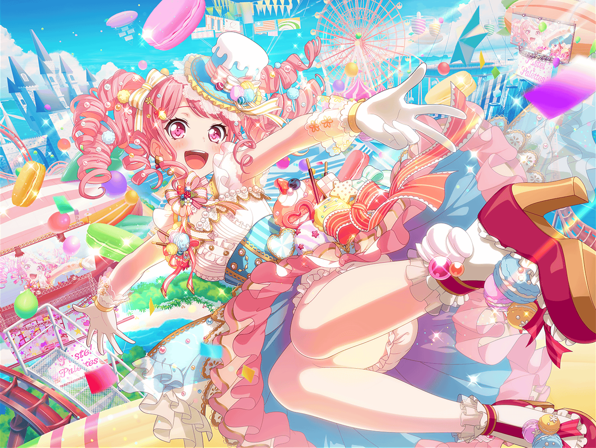

CiRCLE ステージ
彩
よーし、それじゃステージの掃除だね
はぐみ
はぐみ、いつもお店の掃除してるから任せてっ！
薫
さて、何から手を付けたらいいかな
麻弥
普段は暗くて気になりませんが、
こうやってみると結構汚れてますね……
彩
ホントだね……隅っことかライトにほこりがたまってる……
はぐみ
うわっ！ ここ見て！
なんかこぼれたあとがある！
薫
床のワックスも所々はがれているみたいだね
麻弥
ですね。歩くとちょっとでこぼこしているところが……
はぐみ
なんか思ったより大変かも……？
彩
うん……でも、
やるって決めたしできるところまではやってみようよ！
麻弥
そうですね、それじゃさっそく始めましょう！
薫
では、私は高い所の埃を落としていこうか
彩
私は掃除機をかけるね
はぐみ
はぐみは水拭きするよ！ ぞうきん、ぞうきん
麻弥
では、ジブンはゴミを集めながら、
頑固な汚れをヘラとかでなんとか取ってみますー！
彩
よーしそれじゃあ、お掃除スタート！
麻弥・薫
おー！
はぐみ
……って、あーー！？
彩
ど、どうしたの！？
はぐみ
ここ！ ここ見て！
麻弥
なんですか？
薫
これは……カビ、かな？
はぐみ
そう！ カビまではえちゃってるよ、このライブハウス！
麻弥
そ、そこまで気にするとかなり大変になっちゃいそうですが……
薫
とはいえ、無視するわけにはいかないだろうね
麻弥
でも、どうしたら……
彩
みんな、大丈夫だよ！
はぐみ
彩先輩？
彩
まりなさんから借りた掃除道具の中にこれがあったの！
薫
これは……？
麻弥
えーと何々……
『カビを根こそぎ駆除して、再発生を防ぐ。
カビの心までへし折る秘密兵器、カビララバイ』
はぐみ
うわっ！ カビララバイだ！ ＣＭで見たことある！
彩
これをカビに吹きかけて……
彩
１０秒待ってから拭き取ると……！
麻弥
おお！ ピカピカです！
はぐみ
ほんとだー！ すっごいね！
薫
１０秒で拭き取られるカビ……なんとも儚いね
彩
私、なんか悪いことしちゃったかな……？
麻弥
い、いえいえいえ、そんなことはないです。
すごいですよ、彩さん！
はぐみ
そうだよ！ こんなにキレイにとれるなんてすっごいよ！
彩
よ、よかったぁ。
よーしそれじゃあ、この調子でステージの周り、
全部キレイにしちゃおう！
はぐみ・麻弥・薫
おー！
夕方
まりな
みんなー？ 調子はど……う？
まりな
って何これ！？
彩
あ、まりなさん。お疲れ様です
まりな
お疲れ様！ すごいキレイになってるよ、彩ちゃん！
彩
えへへ、みんなでがんばりました！
まりな
ほんとにすごいよ〜大変だったでしょ？
彩
でも自分達でやるって決めたことだし、全然大丈夫でしたよ
はぐみ
うんうんっ！ ぞうきんがけ、結構楽しかったし！
麻弥
北沢さんは途中から、
タイムアタックの競技みたいになってましたね
はぐみ
ぞうきんがけは、自分との戦いだからね！
薫
素晴らしい。己と戦い美しくなる……
スポーツも掃除も根底にあるものは同じなのかもしれないね
彩
そ、そうなのかな……？
まりな
あはは、でもホントみんなお疲れ様。ありがとね！
麻弥
いえいえ、ジブン達のほうこそ感謝したいくらいです
彩
そうだね、私達が使わせてもらうステージを
私達がキレイにできて、本当に良かった
彩
みんな、次のプレイベントは絶対成功させようね！
一同
おー！